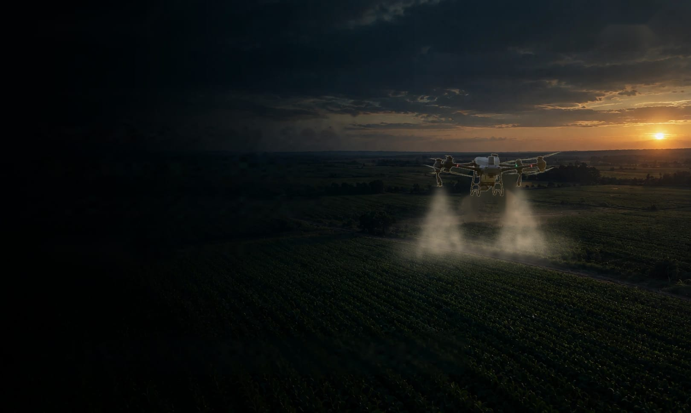
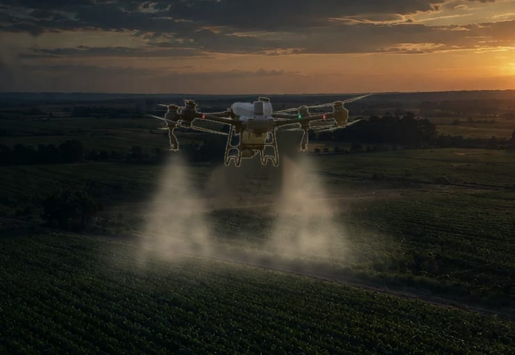

Drone: foto de DJI, solo para el boceto. [PENDIENTE: foto propia o permiso de DJI]
Aplicación aérea con drones · Zárate y zona
Precisión en cada lote. Sin pisar el cultivo.
Pulverizamos, fertilizamos y sembramos al voleo con DJI Agras T50, hasta 100 km de Zárate. Llegamos donde no entra el mosquito y aplicamos en el momento justo.

- 100 kmde cobertura desde Zárate
- 40 Lde tanque en cada vuelo
- 21 ha/hmáximo según DJI, en condiciones ideales
- Licenciade piloto y habilitación provincial
- [PENDIENTE] haaplicadas desde septiembre de 2025
Qué hacemos
Lo que tu lote necesita,aplicado desde el aire.
Trabajamos con receta agronómica y un plan de vuelo para cada lote. Volamos sobre soja, maíz, trigo, girasol, pasturas y frutales, hasta 100 km de Zárate.
-
Pulverización de fitosanitarios
Herbicidas, fungicidas e insecticidas con la dosis de la receta y el tamaño de gota regulado para cada producto.
Cuándo conviene
Lotes anegados o con piso blando, cultivos altos donde el mosquito pisa plantas, o cuando la ventana de aplicación es corta.
Cultivos
Soja, maíz, trigo, girasol, pasturas y frutales.
Cotizá una pulverización -
Fertilización foliar
Nutrientes aplicados sobre la hoja, con la misma precisión de dosis y sin entrar al lote con ruedas.
Cuándo conviene
En etapas avanzadas del cultivo, cuando entrar con un equipo terrestre quiebra plantas o deja huellas.
Cultivos
Soja, maíz, trigo, girasol, pasturas y frutales.
Cotizá una fertilización foliar -
Fertilizantes granulados
Esparcido de fertilizante granulado con el tanque de esparcido del T50, de hasta 50 kg por vuelo.
Cuándo conviene
Refertilizaciones con el lote húmedo, cuando no querés marcar huellas ni compactar el suelo.
Cultivos
Trigo, maíz, pasturas y otros cultivos extensivos.
Cotizá un esparcido -
Siembra al voleo
Semilla de cultivos de servicio o de cobertura esparcida desde el aire, sin pisar el cultivo en pie.
Cuándo conviene
Para sembrar el cultivo de servicio antes de la cosecha del cultivo principal y ganar días de crecimiento.
Especies
[PENDIENTE: qué especies siembran]
Cotizá una siembra al voleo
Nuestra tecnología
DJI Agras T50.Precisión en cada pasada.
Es el drone agrícola de DJI pensado para cultivos extensivos. Estos son los datos del fabricante: los de rendimiento son en condiciones ideales.
- Tanque de pulverización de 40 L y esparcido de hasta 50 kg.
- Caudal de hasta 16 L/min con 2 atomizadores, o 24 L/min con 4.
- Hasta 21 ha/h en cultivos extensivos, según DJI.
- Radar delantero y trasero y visión binocular para esquivar obstáculos y seguir el relieve.
- Tamaño de gota regulable, de 50 a 500 micrones.
- Ancho de trabajo de 4 a 11 m, volando a 3 m del cultivo.
Fuente: especificaciones oficiales del DJI Agras T50. [PENDIENTE: datos propios de campo, si los tienen, van primero]
Misión de vuelo
Lote 7 · Soja · Fungicida
- Superficie48 ha
- Dosis10 L/ha
- Ancho de trabajo7 m
- Lote 3 aplicado
- Recarga del tanque
- Cambio de batería
- 9 km/h NE
- 62 %
- 19 °C
Cómo trabaja el T50 en el lote
- 1 · Plan de vuelo
Se marca el contorno del lote y los obstáculos, y el equipo arma la ruta en pasadas paralelas con el ancho de trabajo elegido.
- 2 · Gota a medida
Dos atomizadores centrífugos arman gotas de 50 a 500 micrones. El tamaño se regula según el producto y la receta.
- 3 · Aire hacia abajo
La corriente de aire de los rotores empuja la gota hacia adentro del cultivo: llega a la parte media y baja de la planta, no solo arriba.
- 4 · Relieve y obstáculos
Dos radares y una cámara doble siguen el terreno (hasta 50° de pendiente) y detectan obstáculos de 1 a 50 m.
Fuente: DJI, especificaciones y funciones del Agras T50.
Clima para aplicar
¿Hoy se puede aplicar?Mirá la ventana en Lima.
Cruzamos el pronóstico de viento, ráfagas, Delta T, temperatura, humedad y lluvia, hora por hora, y te mostramos cuándo conviene volar en las próximas 24 horas. Es una guía: antes de cada vuelo medimos en el lote y seguimos la receta.
Ahora
Buenas condiciones para aplicar
- Viento -- --
- Ráfagas -- máximo en la hora
- Delta T (evaporación de la gota) -- Ideal entre 2 y 8 °C
- Temperatura --
- Humedad --
- Lluvia en las próximas 3 h --
Próximas 24 horas
Barras por hora: la altura es el viento en km/h y el color es el estado para aplicar. Usá las flechas para recorrer las horas. Los mismos datos están en la tabla de abajo.
Cómo lo calculamos
| Variable | Buenas | Precaución | No conviene |
|---|---|---|---|
| Viento | 4 a 15 km/h | 2 a 4 o 15 a 20 km/h | menos de 2 o más de 20 km/h |
| Ráfagas | hasta 20 km/h | 20 a 25 km/h | más de 25 km/h |
| Delta T | 2 a 8 °C | menos de 2 o 8 a 10 °C | más de 10 °C |
| Temperatura | hasta 28 °C | 28 a 32 °C | más de 32 °C |
| Humedad | 50 % o más | 40 a 50 % | menos de 40 % |
| Lluvia | menos de 30 % en 3 h | 30 a 60 % | más de 60 % o lloviendo |
[PENDIENTE: confirmar estos umbrales con ustedes y su asesor]
Cada hora toma el peor estado de todas las variables. Delta T es la diferencia entre la temperatura del aire y la de bulbo húmedo: indica qué tan rápido se evapora la gota.
Ver los datos en una tabla
Guía orientativa con pronóstico para Lima, Zárate. En tu lote las condiciones pueden cambiar: antes de cada vuelo medimos viento, temperatura y humedad, y la decisión final es del aplicador junto con la receta agronómica.
Reservá tu ventanaDatos: Open-Meteo.com (CC BY 4.0), modelo de pronóstico para la zona.
Por qué con drone
Sin huellas en el lote.Sin esperar a que se seque.
Lo que cambia frente al mosquito, con datos de ensayos y del fabricante.
Sin pisoteo
1,7 %
Es lo que se perdió de rinde, en promedio, por la huella del mosquito en soja de fin de ciclo: unos 75 kg/ha en lotes de 3,5 t/ha. Con drone no entran ruedas.
Ensayo publicado en FAVE Ciencias Agrarias (UNL) [1]Entra con el lote anegado
Como no depende del piso, se puede aplicar con barro o agua, cuando el terrestre no entra y la ventana se pierde. Tampoco compacta el suelo.
AgroSpray [4]Llega adentro del cultivo
La corriente de aire de los rotores empuja la gota hacia abajo: llega a la parte media y baja de la planta.
DJI [2]Mucha menos agua
10 a 20 L/ha
Es el volumen habitual con drone en soja y maíz (siempre lo que indique el marbete). Menos viajes de agua al lote.
Redagrícola [5]Sigue el relieve y esquiva obstáculos
Mantiene la altura sobre el cultivo en lomas y bajos y detecta árboles, postes y tendidos.
DJI [2]El aplicador, lejos del producto
Se vuela a distancia, así que hay menos exposición del operario que en un equipo terrestre.
Redagrícola [5]
Cuándo conviene el drone
- Lotes con exceso de agua o piso blando, donde no entra el terrestre [4].
- Cultivos altos o en fin de ciclo, donde la huella cuesta rinde [1].
- Lotes chicos, irregulares, con pendientes o de difícil acceso [4].
- Aplicaciones puntuales en focos de plagas o enfermedades [4].
- Ventanas de aplicación cortas, cuando no conseguís equipo a tiempo.
Cuándo te conviene otro equipo
- Lotes grandes y secos donde el mosquito entra sin problema: el drone lleva 40 L por vuelo y depende de las baterías, y un terrestre hace más hectáreas por día [4].
- Días con viento o lluvia: afectan la calidad de la aplicación, y en ese caso reprogramamos [4].
- Productos que no tienen autorizado el uso con drone. Desde septiembre de 2026 el SENASA autoriza estos usos caso por caso, con un trámite que se inicia en la provincia [6].
- Productos que piden mucho caldo por hectárea: con drone se puede, pero rinde menos hectáreas por hora [5].
Si tu caso es de este lado, te lo decimos antes de cotizar.
Sobre la deriva: el INTA advierte que en los drones es común una proporción alta de gotas de menos de 250 micrones, que el viento se lleva con más facilidad, y por eso hay que conocer el tamaño real de gota con el que se trabaja [3]. Nosotros regulamos la gota según el producto, miramos el Delta T y no volamos con viento fuera de rango.
Fuentes
- Efecto de la pisada de la pulverizadora sobre el rendimiento del cultivo de soja en aplicaciones de fin de ciclo, FAVE Sección Ciencias Agrarias, Universidad Nacional del Litoral.
- Agras T50: funciones principales y especificaciones, DJI.
- Protocolo del INTA para medir la deriva de drones aplicadores, Bichos de Campo.
- Dron pulverizador: ¿es recomendable para todos los cultivos?, AgroSpray.
- Aspectos técnicos clave para una aplicación eficiente con drones, Redagrícola.
- Resolución 869/2026 del SENASA.
Cómo trabajamos
De tu mensaje al informe,en cuatro pasos.
- 1
Nos contactás
Pasanos por WhatsApp la ubicación del lote, las hectáreas, el cultivo y qué hay que aplicar.
- 2
Receta y plan de vuelo
Con la receta agronómica armamos el plan: mapa del lote, obstáculos y pronóstico.
- 3
Aplicación
Volamos controlando viento, temperatura y humedad antes y durante el trabajo.
- 4
Informe
Te pasamos el registro de lo aplicado: superficie, dosis y recorrido.
[PENDIENTE: confirmar que estos pasos son como trabajan]
[PENDIENTE: foto de los dos con el T50]
Quiénes somos
Somos de Lima, Zárate.Hablás con los que vuelan.
Somos dos y los dos tenemos licencia de piloto provincial. Uno vuela y el otro se ocupa de [PENDIENTE: por ejemplo la planificación, la logística y la atención].
Arrancamos en septiembre de 2025 con un DJI Agras T50. Cada aplicación la hacemos nosotros: el que te contesta el WhatsApp es el mismo que planifica el vuelo y está en tu lote.
- 2pilotos con licencia provincial
- 2025empezamos en septiembre
- Limabase en Cuartel V, Zárate
[PENDIENTE: nombres de los dos]
Zona de cobertura
100 km a la redondadesde Zárate.
Trabajamos en la provincia de Buenos Aires, dentro de un radio de 100 km de Zárate. Estas son algunas de las localidades, con la distancia en línea recta:
- Zárate
- Campana10 km
- Limabase
- Capilla del Señor23 km
- Escobar35 km
- Pilar41 km
- San Antonio de Areco44 km
- Luján53 km
- San Andrés de Giles55 km
- Baradero55 km
- General Rodríguez57 km
- Capitán Sarmiento71 km
- Mercedes72 km
- San Pedro75 km
- Carmen de Areco80 km
- Arrecifes99 km
[PENDIENTE: confirmar la lista y si trabajan en Entre Ríos]
¿Tu lote está en la zona? ConsultáMapa orientativo. Distancias en línea recta.
Seguridad y habilitaciones
Todo en regla,en cada aplicación.
Licencia de piloto provincial
Los dos integrantes.
Habilitación de fitosanitarios
Para transporte y aplicación.
Seguro
[PENDIENTE: tipo de seguro]
Receta agronómica
Aplicamos siempre con receta.
Control de clima
Viento, temperatura y humedad antes de cada vuelo.
Preguntas frecuentes
Lo que nos preguntanantes de contratar.
[PENDIENTE: confirmar todas las respuestas]
¿Cuántas hectáreas hacen por día?
Depende de la dosis, del tamaño y la forma del lote, de los obstáculos y de dónde podemos recargar. DJI indica hasta 21 ha por hora en condiciones ideales; para tu lote te damos un número cuando lo vemos. [PENDIENTE: hectáreas por día que hacen ustedes]
¿Cuánto cuesta por hectárea?
No tenemos un precio fijo: depende de las hectáreas, la dosis, el producto, la distancia desde Lima y si el lote tiene obstáculos. Pasanos los datos por WhatsApp y te cotizamos. [PENDIENTE: si hay mínimo de hectáreas o costo de traslado]
¿Qué productos aplican?
Herbicidas, fungicidas, insecticidas, fertilizantes foliares, fertilizantes granulados y semillas para siembra al voleo. Siempre con receta y con productos que admiten aplicación con drone.
¿Qué pasa si hay viento o llueve?
No aplicamos: reprogramamos para la próxima ventana buena. Antes de cada vuelo medimos viento, temperatura y humedad en el lote. [PENDIENTE: límite de viento que usan]
¿Necesito receta agronómica?
Sí. Para aplicar fitosanitarios trabajamos siempre con receta agronómica de un ingeniero agrónomo. [PENDIENTE: qué hacen si el productor no tiene asesor]
¿Qué datos necesitan para cotizar?
La ubicación del lote (sirve un link de Google Maps), las hectáreas, el cultivo y en qué estado está, qué hay que aplicar con la dosis de la receta, y para cuándo lo necesitás.
¿Tienen seguro y habilitación?
Sí. Los dos tenemos licencia de piloto provincial y la habilitación de transporte y aplicación de fitosanitarios. [PENDIENTE: tipo de seguro]
¿Hasta dónde viajan?
Hasta 100 km a la redonda de Zárate, en la provincia de Buenos Aires. Mirá el mapa de cobertura.
Contacto
Pedí tu cotización.Te contestamos nosotros.
Escribinos por WhatsAppEl mensaje ya va escrito: completás las hectáreas, el cultivo y la localidad.
- Teléfono y WhatsApp+54 9 3487 21-7345
- Emailagroatom00@gmail.com
- Instagram@agro.atom
- BaseCuartel V, Lima, partido de Zárate, Buenos Aires
- Horario[PENDIENTE]